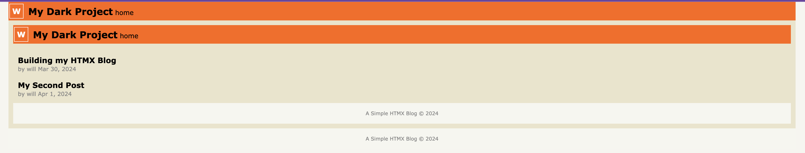
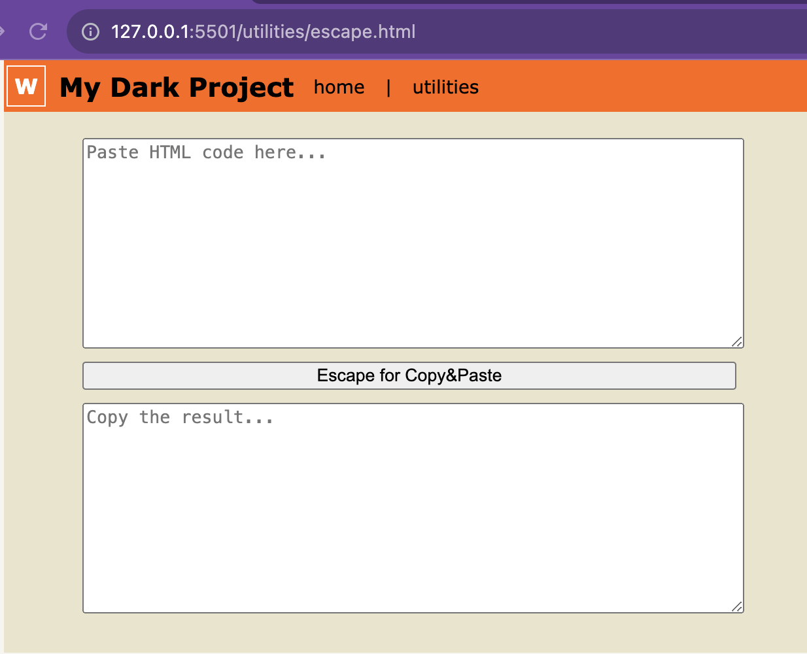
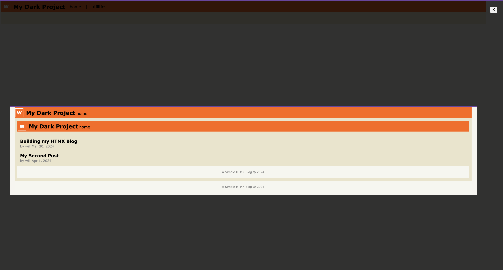

Date: Mar 30, 2024. Author: Will
While kicking off this project on a whim, I first identified a few key needs:
Next, to keep things from getting out of hand, a few constraints:
Okay, I know enough about html and css to get a page to display text and images (I learned img src="" from Myspace!)
Next up is code blocks
<div>Sample HTML code block</div>Kind of a pain. With simple html we have to escape everything, there's not a super simple block quote/escape solution from what I can see. I'll return to this later.
That seems like I have enough to get started. My project directory is pretty simple. root, /posts, /posts/media. This should largely look like a static site, and it could be, but I want to use HTMX to make it feel like an SPA.
There is a bit of a trick to playing with the file architecture and the htmx routing. `hx-get=` will swap content in a section. It's easy to get started with this, conceptually you're just swapping chunks of html, but I quickly encountered my first trouble implementing navigation and trying to return to the home page.
This was the result of nested, dynamic loading of the html content. If I was on a blog post page with its own navigation content, and then I "navigated back" to the index page (which is actually just re-loading the content section), it would include, of course, the whole index.html page ~ including its navigation bar! After thinking about this, I came up with a cheeky solution: html controller pages for any url I want to be able to link to. This means that any page I want to be able to link to will require a standard template wrapping its content.
<!DOCTYPE html>
<html lang="en">
<head>
<meta charset="UTF-8">
<meta name="viewport" content="width=device-width, initial-scale=1.0">
<title>My Dark Project</title>
<link rel="stylesheet">
<script src="https://unpkg.com/htmx.org"></script>
</head>
<body>
<!-- Navigation Container -->
<section id="navigation">
<div
hx-get="navigation.html"
hx-trigger="load"
hx-target="#navigation">
</div>
</section>
<main>
<!-- End Navigation Container -->
<!-- Content Container -->
<section id="content">
<!-- Update this code block -->
<div
hx-get="container-content.html"
hx-trigger="load"
hx-target="#content"
hx-push-url="/container.html"
hx-push-url="true">
</div>
<!-- End of aforementioned code block -->
</section>
<!-- End Content Container -->
</main>
<footer>
<p>A Simple HTMX Blog © 2024</p>
</footer>
</body>
</html>
This ensures that if I link directly to any main, intentionally navigable page on my blog, the user will be captured in the main template "container" and will otherwise navigate via dynamic htmx loading of the "content" section. This is of course not a perfect solution though ~ now I have .html content pages that could be accessed (like building-my-htmx-blog-content.html) without any styling ~ but that is a compromise I am willing to make for this jank project. Despite the weirdness of being able to access these non-container pages directly with no styling or navigation, and the jankiness of these captive landing pages that all share an identical ingress template (copy and pasted no less!) into my HTMX dynamic loading pathways, I think this solution is fun.
Formatting code blocks for direct html display is a pain. So, I caved and built my first utility to support me. And out of a desire to have more than one link in the nav, I made it an accessible utility!
I am pretty happy with this as both a quick script and a first little script utility to include on the page. Without something like this, trying to include code samples would be very cumbersome
The lightbox is pretty jank. I'll roll with it for this post, but I do not think I will generally continue with the pattern, except for where the use of a thumbnail/lightbox serves an explicit purpose. To achieve the affect, again we're doing some clever dynamic loading with htmx-get.
Instead of a simple image tag, now we drop in an htmx enriched anchor tag. I don't think it really matters what kind of html element contains your hx-get directive, but semantically anchor makes sense enough to me!
HTMX For Lightbox Loader
<a hx-get="media/duplicate_header.html"
hx-target="#content"
hx-trigger="click"
hx-url-push="posts/building-my-htmx-blog.html"
>
<img src="media/duplicate_header.png" alt="Duplicate Header" class="image-thumbnail">
</a>
media/duplicate_header.html
<!DOCTYPE html>
<html lang="en">
<head>
<meta charset="UTF-8">
<meta name="viewport" content="width=device-width, initial-scale=1.0">
<title>My Dark Project</title>
<link rel="stylesheet" href="/style.css">
<script src="https://unpkg.com/htmx.org"></script>
</head>
<body>
<div class="full-image-container">
<img src="media/duplicate_header.png" alt="Full size image" class="full-image">
<button
hx-get="/posts/building-my-htmx-blog.html"
hx-target="#content"
hx-trigger="keyup[key=='Escape'] from:body">
X</button>
</div>
</body>
</html>
So it's cool an all to be able to click and expand the thumbnail, but once you've started scrolling down the post, you lose your position when you return from the fake lightbox. That alone makes this pretty useless IMO, but it was cool to experiment with. I think there is probably other ways to experiment with this which would require less templatey copy&pasting ~ like maybe creating a section nested within the page... Let's try it!
Wow that's considerably better. Here's how the code looks:
Thumbnail Section and htmx element (inline in this post)
<section id="test-thumbnail">
<a hx-get="media/duck_thumbnail.html"
hx-target="#test-thumbnail"
hx-trigger="load">
</a>
</section>
duck_thumbnail.html
<a href="#"
hx-get="media/duck.html"
hx-target="#test-thumbnail"
hx-trigger="click">
<img src="media/duck.png" style="max-width: 20%" alt="duck thumbnail" class="image-thumbnail">
</a>
duck.html
<!-- Re-Insert the image below so that when this html file loads and replaces the previous section, we still have continuity and represent this image on the page-->
<img src="media/duck.png" style="max-width: 20%" alt="duck thumbnail" class="image-thumbnail">
<div class="full-image-container">
<img src="media/duck.png" alt="Full size image" class="full-image">
<button
hx-get="media/duck_thumbnail.html"
hx-target="#test-thumbnail"
hx-trigger="click, keyup[key=='Escape'] from:body">
X
</button>
</div>
This is still a lot more effort than just dropping an image tag in with the source path... But the effect is pretty cool. I'm actually very pleased with this second go around, especially considering my simple Q&A of ChatGPT to get an improved lightbox effect without javascript yielded nothing better than the first implementation!
At risk of spending too much time tinkering, I'm going to call this a wrap. Maybe a part 1. TBD, I'm going to clean this up and commit it and try to deploy it via Github Pages to make it live and make it real. I'm sure I am not alone in finding it satisfying to be able to direct any computer to a website to see something I made, however trivial, and further, getting this thing live just makes it easier and more fun to continue working on it in follow up!